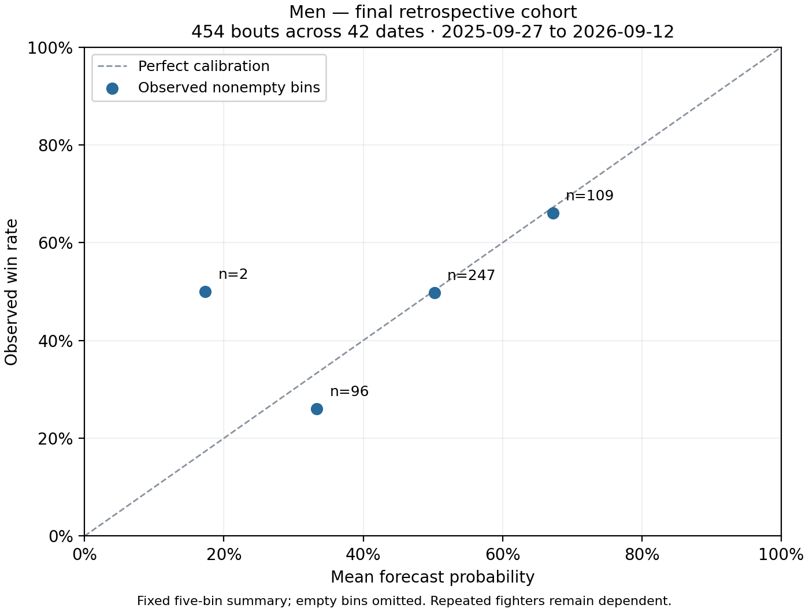
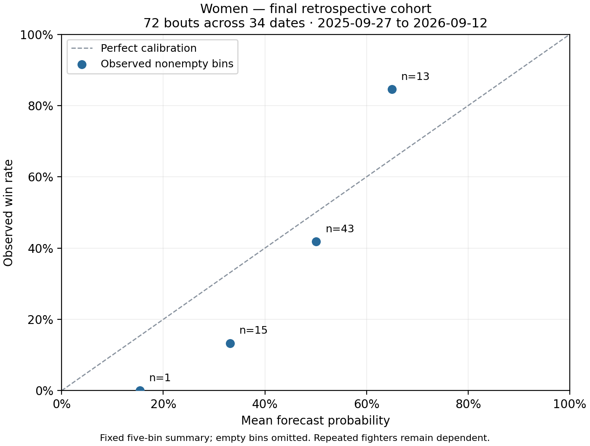

MODEL VALIDATION
LIMITED_RETROSPECTIVE_EVALUATION
Protocol: v07-live-inputs-20261015-3
Period: 2023-09-27 through 2026-09-26
Frozen holdout begins: 2025-09-27; scores and calibration below use holdout bouts only.
Snapshot evaluation includes later source corrections. This is not prospective performance.
Accuracy: fraction of correct choices. Brier score: squared probability error; lower is better.
Accuracy chooses fighter A at probabilities of 50% or higher, including exact 50/50 ties; orientation uses stable IDs.
Log loss penalizes confident errors; lower is better. Calibration compares probability bins with observed outcomes.
Report reviewed: 2026-10-15T09:41:47+00:00
Retrospective installed snapshot includes later source and profile corrections; not prospective performance.
Prior research exposure outside the recorded v0.6 dates is not independently established.
Repeated fighters remain dependent; event-date bootstrap intervals are descriptive.
Women: actual dated app input rows, parent model fitting, installed training snapshot.
Men: stored prefight-row evaluation; end-to-end live behavior requires separate parity checks.
Accuracy and calibration do not establish profitability. Reliability thresholds are not validated for the corrected policy.
MEN — v3_bayes_smoothed
Evaluated: 1278; excluded: 20; failed: 0; remaining: 0
Scored holdout bouts: 454
Model holdout: accuracy=0.6388, brier=0.2288, log_loss=0.6494
Frozen reference: accuracy=0.6388, brier=0.2288, log_loss=0.6494
50/50 holdout: accuracy=0.4868, brier=0.25, log_loss=0.6931
Elo holdout: accuracy=0.5551, brier=0.2478, log_loss=0.6889
Probability 0%–20%: n=2, mean forecast=0.1733722846973045, observed=0.5
Probability 20%–40%: n=96, mean forecast=0.3335076653845133, observed=0.2604166666666667
Probability 40%–60%: n=247, mean forecast=0.5023322449136307, observed=0.4979757085020243
Probability 60%–80%: n=109, mean forecast=0.6722324956757184, observed=0.6605504587155964
Probability 80%–100%: n=0, mean forecast=None, observed=None
Event-cluster bootstrap: {'method': '1000 paired event-date bootstrap replicates; seed 42; descriptive 95% interval', 'clusters': 42, 'candidate_minus_reference_log_loss_low': 0.0, 'candidate_minus_reference_log_loss_high': 0.0}; repeated fighters remain dependent.
WOMEN — v2_chronological_calibrated_ensemble
Evaluated: 237; excluded: 4; failed: 0; remaining: 0
Scored holdout bouts: 72
Model holdout: accuracy=0.6806, brier=0.212, log_loss=0.6131
Frozen reference: accuracy=0.6528, brier=0.2179, log_loss=0.6273
50/50 holdout: accuracy=0.4306, brier=0.25, log_loss=0.6931
Elo holdout: accuracy=0.6389, brier=0.2454, log_loss=0.684
Probability 0%–20%: n=1, mean forecast=0.15372690372173103, observed=0.0
Probability 20%–40%: n=15, mean forecast=0.33139084661100504, observed=0.13333333333333333
Probability 40%–60%: n=43, mean forecast=0.5007925573618341, observed=0.4186046511627907
Probability 60%–80%: n=13, mean forecast=0.6498786251131329, observed=0.8461538461538461
Probability 80%–100%: n=0, mean forecast=None, observed=None
Event-cluster bootstrap: {'method': '1000 paired event-date bootstrap replicates; seed 42; descriptive 95% interval', 'clusters': 34, 'candidate_minus_reference_log_loss_low': -0.03592988172254352, 'candidate_minus_reference_log_loss_high': 0.007899051116600941}; repeated fighters remain dependent.Points describe observed bins; counts and repeated-fighter dependence limit their interpretation.

| Bin | n | Mean forecast | Observed rate |
|---|---|---|---|
| 0%–20% | 2 | 0.1733722846973045 | 0.5 |
| 20%–40% | 96 | 0.3335076653845133 | 0.2604166666666667 |
| 40%–60% | 247 | 0.5023322449136307 | 0.4979757085020243 |
| 60%–80% | 109 | 0.6722324956757184 | 0.6605504587155964 |
| 80%–100% | 0 | Unavailable | Unavailable |
Points describe observed bins; counts and repeated-fighter dependence limit their interpretation.

| Bin | n | Mean forecast | Observed rate |
|---|---|---|---|
| 0%–20% | 1 | 0.15372690372173103 | 0.0 |
| 20%–40% | 15 | 0.33139084661100504 | 0.13333333333333333 |
| 40%–60% | 43 | 0.5007925573618341 | 0.4186046511627907 |
| 60%–80% | 13 | 0.6498786251131329 | 0.8461538461538461 |
| 80%–100% | 0 | Unavailable | Unavailable |